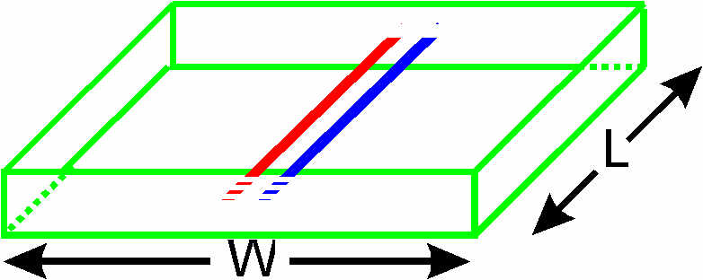
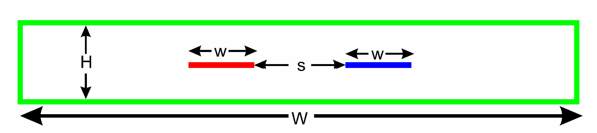

The support for coupled lines is not completely finished yet, although since version 4.1.0 it is quiite reasonable. It is now possible to perform most tasks one would want to do with such a program. From a user's specification of a frequency response and coupling factor of a directional coupler, it is now possible to generate a physical layout that will have those specifications!. It is hoped this will be useful.
Using the program design_coupler it is possible to fully automate the process of designing a directional coupler. Note that the directional coupler designed must have a fixed physical shape shown below in 3D

A 2D view of the end is shown too

although the shape is in practice quite a practical one to use for air-spaced lines. In fact, most people would consider it the easiest directional coupler to make for such situations. An example of using design_coupler to design a coupler can be found by running it with the -e command line option.
However, design_coupler can not be used to fully automate the process of designing directional couplers on PCBs, but other methods exist to make that job easier. Some manaul and fairly tedious work is needed to design a directional coupler on a PCB having the properties (frequency response, coupling factor) that you want. However, it can be done with the aid of the package of programs provided in atlc.
atlc, one can determine the properties of any of the couplers below:
create_bmp_for_stripline_coupler for analysis with atlc. Using the program create_bmp_for_stripline_coupler, one can very quickly generate a bitmap of a directional coupler like this :atlc. In fact, since there is an analytical solution for this coupler (strictly only valid when the conductors are of zero thickness and W infinitely wide), create_bmp_for_stripline_coupler calculates the theoretical answer too. This was primarily designed for checking for errors in atlc with coupled lines, which were always found to be less than 0.8%